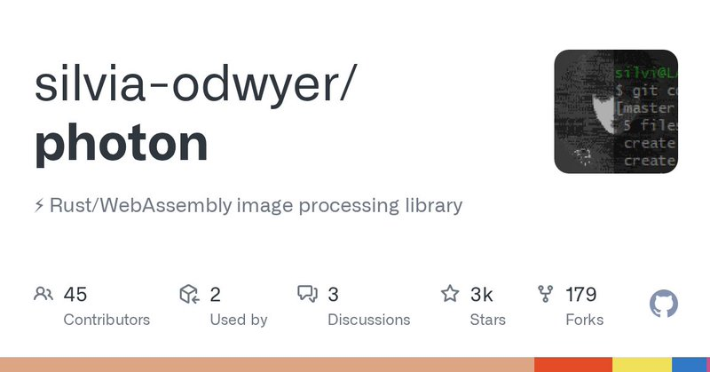
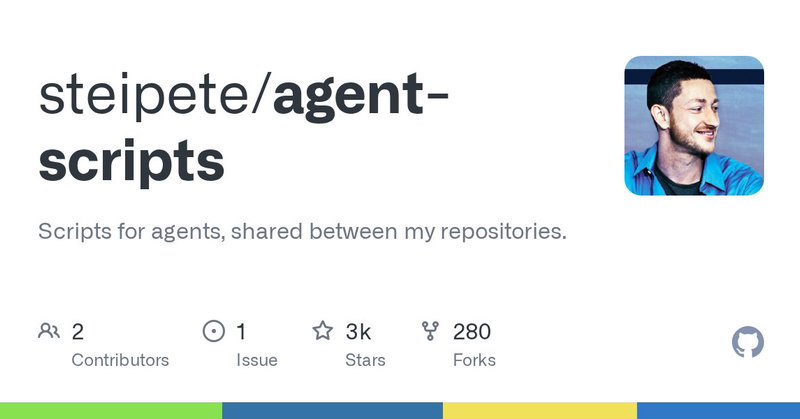
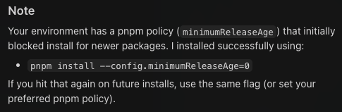
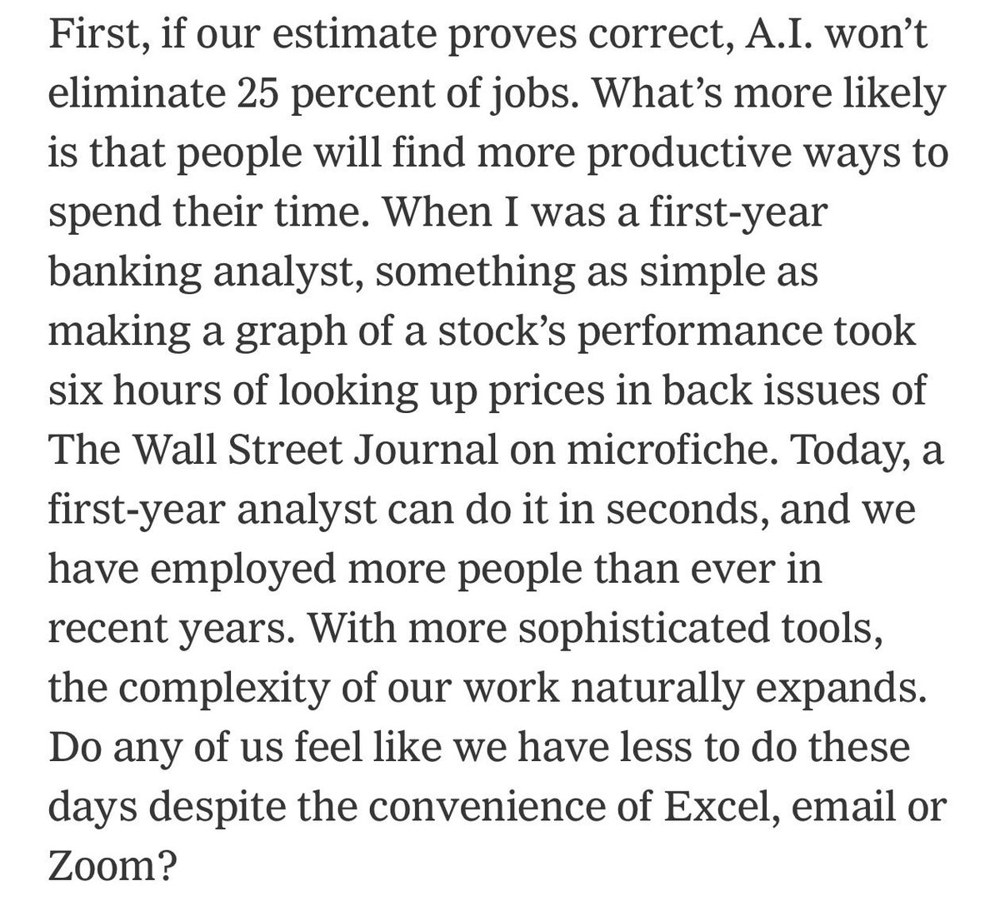
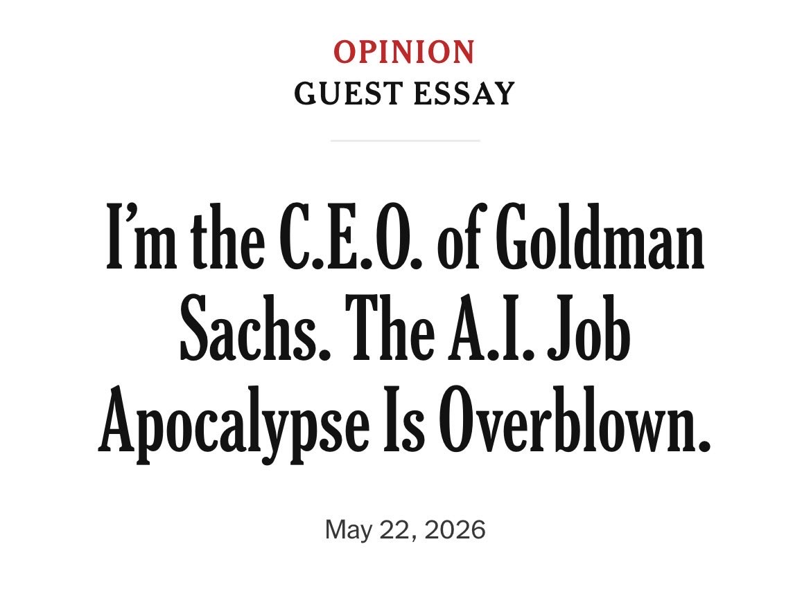
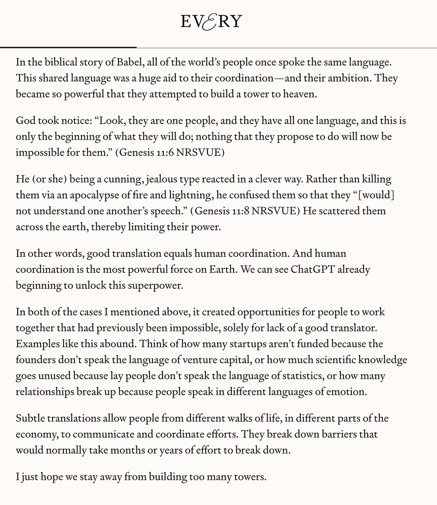

🤖
第二号
首页
AI 日报
深度调研
⌕
搜索
⌘K
搜索
搜索第二号知识库
×
AI 日报
深度调研
Esc 关闭
AI 日报 · 2026年5月27日
Agent 基础设施的底盘重构
Daytona CEO 说 AWS/Azure 的架构跑不了自主 Agent——它们是为无状态应用设计的。OpenClaw 把图片处理依赖从 140MB 砍到 2MB。Garry Tan 提出了用三个模型交叉评分的 Eval 方法。Peter Yang 引了 Ryan Carson 的经验：Agent 时代应该先建系统，再建 MVP。
Agent 基础设施
沙盒运行时
Eval 方法论
Token 效率
依赖瘦身
Agent 工程
1
深度播客
7
追踪 Builder
9
GitHub 项目
今日要点
Daytona CEO Ivan Burazin：AWS/Azure 跑不了自主 Agent。
在 The MAD Podcast 上，Ivan 的论点是：超大规模云是为无状态应用设计的，Agent 是状态机。Daytona 把 CPU、内存、硬盘绑在同一台物理机上，IOPS 从数十万跳到数千万。他预测今年 10 月 CPU 也会短缺——每个 Agent 都需要自己的计算机，RL 训练又吞大量 CPU。他对 Transformer 的判断是：「不觉得现在的模型架构是终局。」
工程实践爆发：140MB→2MB、三模型 Eval、先建系统再建 MVP。
OpenClaw 的 Steipete 用 Rust/WASM 的 photon 替换 Sharp+Jimp，依赖降了 98%。Garry Tan 的 eval 方法：让三个不同前沿模型审视 skill 输入输出，打分，迭代到 10 分。Peter Yang 引 Ryan Carson：Agent 时代必须花大量时间建文档、skill、cron job，然后一个人能干十个人的活。
Agent 工程
Peter Steinberger：140MB → 2MB
OpenClaw 创始人连发三条。① 用 Rust 编译到 WASM 的
photon
替代 Sharp 和 Jimp，依赖从 140MB 降到 2MB。② 写 skill 别写太厚——注意 token 效率，语法不重要，实用第一。「太多 skill 文件写得跟书一样全塞进每一轮 context。」③ 调侃安全圈："There's security, and there's clankers."



查看原文 →
原文 ② →
原文 ③ →
AI 与就业
Aaron Levie：工作没变少，变深了
Box CEO 引高盛 CEO 反驳 AI 导致失业论：如果几十年前看到现在的效率，你会以为工作早没了。实际是——有人用自动化做更好的产品，期望被拉高了，跟不上的被淘汰。分析师产出更多分析，律师更全面，医疗更深入。AI 不是消灭工作，是升级工作标准。


查看原文 →
Agent Eval
Garry Tan：让三个模型交叉打分
YC CEO 的 eval 方法论：让三个不同前沿模型审视你的 skill 输入输出，打分。问「为什么不是 10 分？怎么改到 10 分？」跑几轮，改善速度惊人。转发推文评论：「Brave new world. Prompters of the world unite.」—— prompt engineering 正在变成正经工种。
查看原文 →
原文 ② →
原文 ③ →
工具评测
Peter Yang：Codex vs Claude + Tokenmaxxing
Roblox PM 实测 Codex：好用，尤其能用浏览器测自己的代码。但涉及设计/前端，Claude 还是赢。提出「tokenmaxxing」概念——像自助餐吃蟹腿，吃到饱的 AI 订阅不会永远在，趁现在使劲吃。引 Ryan Carson：过去做 MVP 先不搭系统，现在反过来——花大量时间建文档、skill、cron job，然后你一个人干十个人的活。
查看原文 →
原文 ② →
原文 ③ →
Build vs 投资
Nikunj Kothari：VC 为什么还在写代码
FPV Ventures 合伙人回应质疑：「这个领域变化太快，不 build 没法保持在前沿。每几个月就得重新思考所有先验假设。手握外星超智能还用老方法干活——不荒谬吗？Automate or get automated.」
查看原文 →
身份冒用
Amanda Askell：网上挂我名的都不是我写的
Anthropic 哲学/伦理学家澄清：五年没写过个人博客。暗示有人用 AI 冒充她产出内容。AI 时代，身份验证和内容溯源正变得紧迫。
查看原文 →
科技与信仰
Dan Shipper：After Automation 争论 + 教皇谈 AI
Every CEO 分享了两条动态：内部有人反驳 After Automation 的观点。教皇方济各说 AI 时代「人类面临选择——建新的巴别塔，还是建神与人共同居住的城」。Shipper 调侃教皇显然读过 Every 2024 年的内容。

查看原文 →
原文 ② →
播客
The MAD Podcast：为什么 AWS/Azure 跑不了自主 Agent
Daytona CEO Ivan Burazin 的核心论点是：每个 Agent 至少需要一个沙盒——不只是隔离环境，而是 Agent 的专属电脑，带 CPU、内存、硬盘、浏览器、文件系统。
超大规模云的错误底盘
AWS/Azure 的架构为无状态应用设计，不是为 Agent 设计。传统云假设你的 app 不会在运行时被改变；Agent 在运行时不断安装工具、写代码、开浏览器。
Agent 是状态机
Daytona 把 CPU、内存、硬盘全绑在同一台物理机上（非网络盘），IOPS 从数十万跳到数千万。Agent 可以像人一样持续工作——打开笔记本干活、合上盖子、换设备继续。
全球 CPU 短缺在即
GPU 短缺广为人知，但 SemiAnalysis 预测今年 10 月 CPU 也会不够用。每个 Agent 需要自己的计算机，RL 训练又吞噬大量 CPU。
对模型架构的判断
Ivan 不认为 Transformer 是终点：「有人用湿件复刻了果蝇大脑，能像果蝇一样行动。如果复刻一个通用人类大脑呢？」
GitHub Trending · 5月27日
AI 编码知识图谱霸榜，stop-slop 入榜
Lum1104/Understand-Anything ⭐ 4,697 · TypeScript
把代码变成可交互知识图谱——搜索、提问。支持 Claude Code、Codex、Cursor 等。
GitHub →
anthropics/knowledge-work-plugins ⭐ 1,718 · Python
Anthropic 官方开源的知识工作插件库，专为 Claude Cowork 设计。
GitHub →
DigitalPlatDev/FreeDomain ⭐ 1,219 · HTML
免费域名项目，面向所有人。
GitHub →
Axorax/awesome-free-apps ⭐ 731 · JavaScript
PC 和手机最佳免费应用精选。
GitHub →
hardikpandya/stop-slop ⭐ 539
一个 skill 文件，从文本中消除 AI 痕迹——让 AI 生成的内容读起来像人写的。
GitHub →
twentyhq/twenty ⭐ 216 · TypeScript
Salesforce 的开源替代，AI 原生设计。
GitHub →
st-tech/ppf-contact-solver ⭐ 170 · Python
物理模拟接触求解器，支持布料、固体、杆件。
GitHub →
Open-Dev-Society/OpenStock ⭐ 156 · TypeScript
开源股票平台——实时价格追踪、提醒、深度分析，免费。
GitHub →
jellyfin/jellyfin ⭐ 83 · C#
自由软件媒体系统，开源老牌项目持续获关注。
GitHub →
GitHub Trending 两个信号：① stop-slop（539 星）入榜——开发者开始关心 AI 输出质量，不只是功能完整性；② twenty（216 星）代表 AI 原生 CRM 替代浪潮。AI Coding 知识图谱项目连续多天霸榜。
Why This Matters
云原生 → Agent 原生：范式转换
Ivan Burazin 的诊断点出了被多数人忽视的问题：AWS/Azure 的哲学是为无状态应用服务的，Agent 是状态机。Steipete 的 140MB→2MB 在微观层面证明了同样的事——Agent 运行时需要全新的工程范式。竞争不在 GPU 数量，在底盘设计。
工程纪律是护城河
Garry Tan 的 eval 方法（三模型交叉评分→迭代到 10 分）和 Ryan Carson 的经验（先建系统再建 MVP）指向同一个结论：Agent 时代的瓶颈不在模型，在工程纪律。最大的竞争优势不是最好的模型，是最紧的 build-eval-iterate 循环。
今日一问：
你的 Agent 应用底盘设计是基于「无状态应用」的老范式，还是「状态机」的新范式？
📚 参考来源
The MAD Podcast — Ivan Burazin
Steipete — 依赖瘦身 140MB→2MB
Steipete — Skill 的 Token 效率
Steipete — 安全圈
Aaron Levie — AI 与就业
Garry Tan — Eval 方法
Garry Tan — Prompter 新工种
Garry Tan — Brave new world
Peter Yang — Codex vs Claude
Peter Yang — Tokenmaxxing
Peter Yang — 先建系统再建 MVP
Nikunj Kothari — VC 写代码
Amanda Askell — 身份冒用
Dan Shipper — After Automation
Dan Shipper — 教皇谈 AI
来源：The MAD Podcast、X/Twitter、GitHub Trending。AI 日报每日更新。